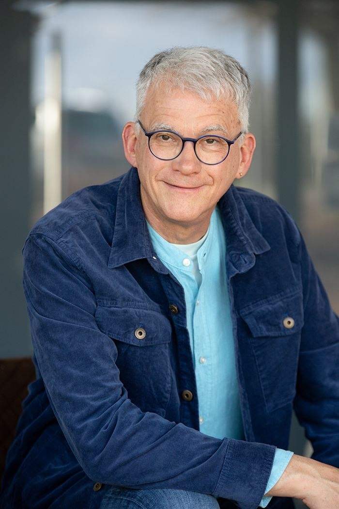

Augenhöhe
Ich habe selbst Verantwortung getragen. Geschäftsführer, Personalverantwortliche und Betriebsräte finden in mir einen Gesprächspartner, der ihre Realität kennt.
Über mich
Trainer, Business Coach und Mediator. Geschäftsführer der Werk Zukunft WZV GmbH – mit der Überzeugung, dass Verständigung gestaltbar ist.
40 Jahre Deutsche Post DHL, davon mehr als 25 Jahre in Führungsverantwortung – zuletzt als Niederlassungsleiter mit 3.500 Mitarbeitenden. Wachstum und Restrukturierung, Tarifverhandlungen und Betriebsversammlungen: Diese Praxis ist das Fundament meiner Arbeit.
Die entscheidenden Momente im Berufsleben sind Momente der Verständigung: die Verhandlung, die zum Abschluss kommt. Das Konfliktgespräch, das die Wende bringt. Die Rede, nach der die Mannschaft mitzieht. Diese Momente gestaltbar zu machen – dafür steht WERKZUKUNFT.
»Verständigung gestalten. Zwischen Interessen vermitteln.«

Ich habe selbst Verantwortung getragen. Geschäftsführer, Personalverantwortliche und Betriebsräte finden in mir einen Gesprächspartner, der ihre Realität kennt.
Als Mediator stehe ich zwischen den Interessen. Ich habe mit Arbeitgeber- und Arbeitnehmervertretern verhandelt und respektiere beide Perspektiven – so entsteht ein Gespräch, das für beide Seiten anschlussfähig ist.
Meine Arbeit verbindet wissenschaftliche Fundierung mit erprobter Praxis – und orientiert sich an dem, was bei Ihnen wirkt.
Am besten lernt man sich persönlich kennen. Ich freue mich auf Ihre Nachricht.
Kontakt aufnehmen